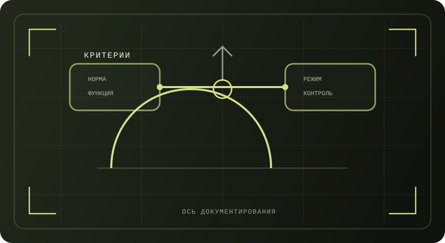

Раздел
Сравнение по ключевым критериям
Таблица сопоставляет гражданского системного администратора (профстандарт 06.026) и военного специалиста связи/ИТ (уставы, закон о гос. тайне, справочные материалы по войскам связи) по целям, режимам, документам и ответственности.
Сводная таблица
Формулировки опираются на открытые нормативные и справочные источники.

| Критерий | Гражданская сфера | Военная сфера |
|---|---|---|
| Цель деятельности | Обеспечение требуемого качественного бесперебойного режима работы информационно‑коммуникационной системы (ИКС) согласно профстандарту. | Развертывание и эксплуатация системы связи и средств автоматизации для обеспечения управления войсками (силами) в мирное и военное время (в рамках задач войск связи). |
| Нормативная база | Профстандарт 06.026; трудовое законодательство; локальные регламенты организации; нормы по персональным данным (для организаций, обрабатывающих ПДн). | Общевоинские уставы (внутренняя служба, дисциплина); ФЗ «О воинской обязанности и военной службе»; закон «О государственной тайне» (при наличии допуска/доступа). |
| Организация работы | График/дежурства определяются трудовым договором и локальными актами; применяются регламенты поддержки и эксплуатации (������ ������/���������� �� ������ ������� и аналоги). | Служба организуется приказами и распорядком; возможны суточные наряды и формы несения службы; выполнение задач по приказу. |
| Инциденты и восстановление | Регистрация и устранение инцидентов, диагностика и локализация отказов, восстановление работоспособности по инструкциям и планам работ (профстандарт). | Восстановление работоспособности средств связи и автоматизации в рамках задач подразделения и установленного режима службы. |
| Резервное копирование | Резервное копирование/архивирование/восстановление конфигураций и данных по планам (профстандарт 06.026). | Резервирование и восстановление могут входить в мероприятия по поддержанию работоспособности и готовности средств связи/автоматизации (по регламентам подразделения). |
| Учет и инвентаризация | Инвентаризация технических и программных средств, маркировка, фиксация размещения, отчеты и заявки (профстандарт). | Учет средств связи и документации ведется в установленном порядке и в пределах режимных требований (включая требования по допуску/доступу при наличии). |
| Режим секретности | Обычно применяется режим коммерческой/служебной тайны и политика ИБ; при обработке персональных данных — требования 152‑ФЗ. | При наличии доступа к сведениям, составляющим государственную тайну: степени секретности и допуск/доступ по закону. |
| Ответственность | Дисциплинарная ответственность (ТК РФ), материальная ответственность за прямой действительный ущерб (ТК РФ), иные виды ответственности по закону в зависимости от ситуации. | Дисциплинарная ответственность по Дисциплинарному уставу; правовые последствия при нарушении режима секретности и иных норм. |
| Документирование | Журналы инцидентов, планы резервного копирования, инвентаризационные ведомости, отчеты мониторинга, заявки на ремонт/закупку, документация по изменениям. | Журналы службы и учета, приказы и отчетность подразделения, документация по эксплуатации средств связи/автоматизации, документы режимного характера (по допуску/доступу при наличии). |
Пояснения к терминам
Короткие пояснения к терминам, используемым в таблице.
ИКС (информационно‑коммуникационная система)
Термин используется в профстандарте 06.026 для описания объекта обслуживания: совокупность технических и программных средств, обеспечивающих обмен информацией и предоставление сервисов.
Уставы и внутренний порядок
Общевоинские уставы закрепляют порядок внутренней службы и дисциплины, а также правила исполнения обязанностей военной службы, включая формы несения службы и исполнение приказов.